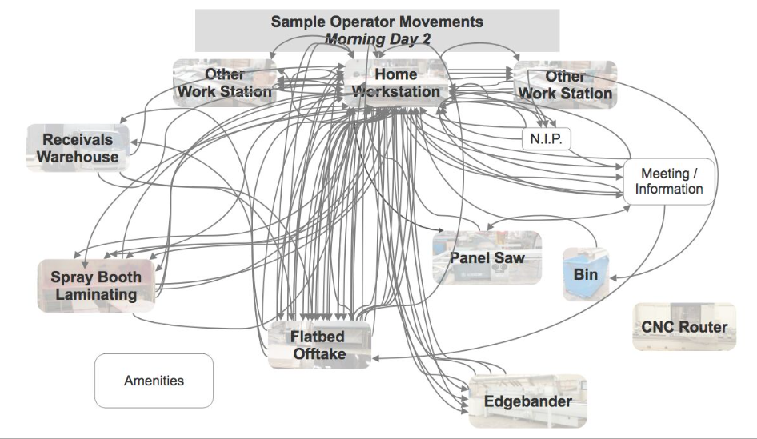
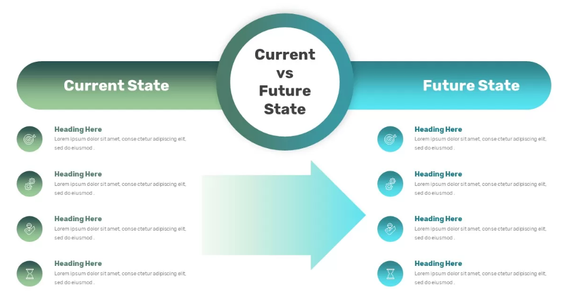
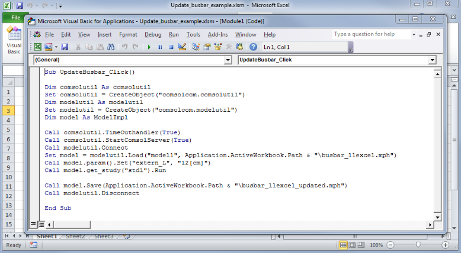
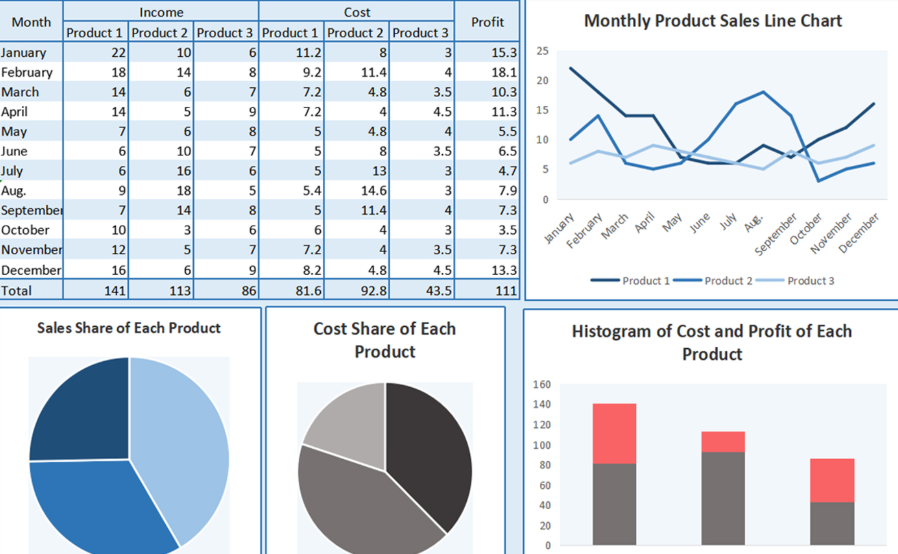

Explore my projects at
General Dynamics Land Systems
All images used are for illustrative purposes only since I cannot share GDLS proprietary information

One Piece Flow Implementation
Industrial Engineering Intern @ GDLS

Skills Applied
LEAN Manufacturing
Process Optimization
Value Stream Mapping
- Conducted a detailed process observation using time studies, spaghetti diagrams, and value stream analysis.
- Identified major sources of waste: transportation, inventory buildup, defects, and overprocessing.
- Mapped the current state and designed a future-state flow model centered around one-piece movement.
- Collaborated with operators and engineers to reorganize workstations into a logical, linear sequence.
- Measured a 12% efficiency improvement by eliminating batch queues.
Inspiration and Objective:
Process and Results:


VBA Reporting Automation
Industrial Engineering Intern @ GDLS
Skills Applied
VBA Programming
Data Processing
Excel Automation
- Improved consistency and accuracy by eliminating manual data entry and formatting errors.
- Reduced report creation time by 80–90%, turning a repetitive process into a near-instant automated task.
- Mapped the current state and designed a future-state flow model centered around one-piece movement.
- Positive adoption from supervisors and engineers due to reduced workload and clearer analytics.
- Measured a 12% efficiency improvement by eliminating batch queues.
Inspiration and Objective:
Process and Results:

